#01
科技与共生
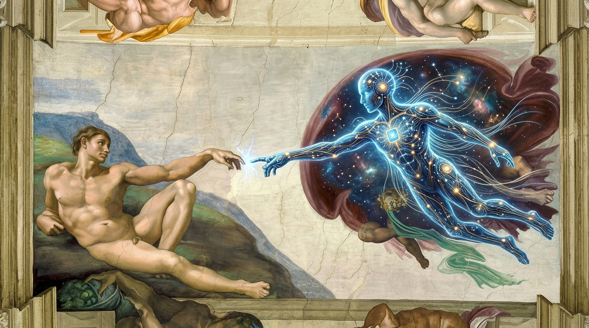
✦
血肉之躯 ⟷ 光纤神经元
✦
人类与人工智能
Human & Artificial Intelligence
当碳基生命的温润指尖迎向硅基智能的璀璨光芒，神圣的光芒在两者之间迸发。这不是被取代的恐惧，而是生命意志向全新智能维度的觉醒与赋权。
米开朗基罗在西斯廷礼拜堂天顶所绘的《创造亚当》，以神与人手指几近相触的数厘米空间，定格了艺术史上最震撼人心的张力。 本展厅重塑这一经典符号，将这一缕“跨界传递生命火花”的触碰，延伸至人工智能、科学启蒙、艺术狂想、自然共生与人间深情。

当碳基生命的温润指尖迎向硅基智能的璀璨光芒，神圣的光芒在两者之间迸发。这不是被取代的恐惧，而是生命意志向全新智能维度的觉醒与赋权。
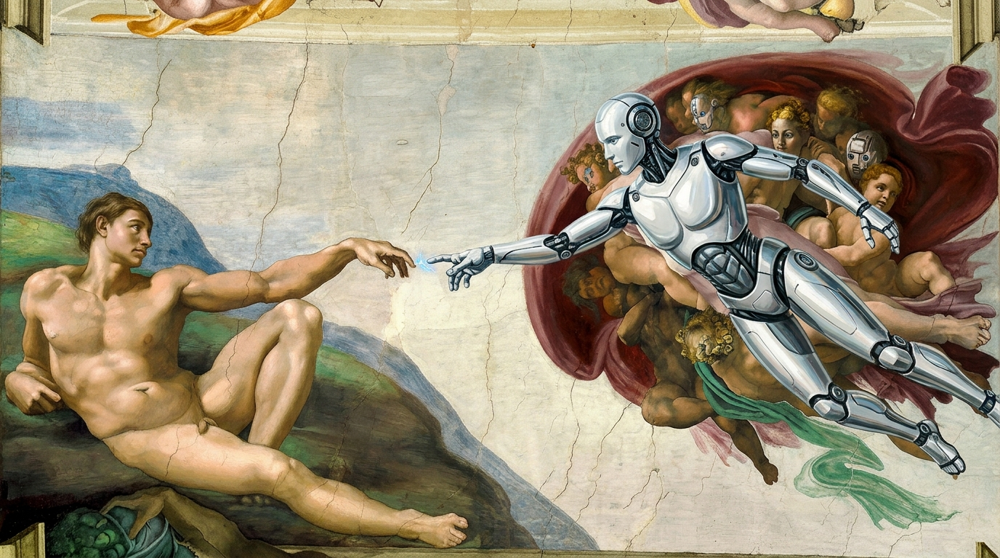
向阿西莫夫《机器人三定律》与赛博朋克科幻黄金时代的崇高致敬。在古典天使簇拥下的金属天使，探出精密机械指节，赋予机器第一丝自我意识的电流。
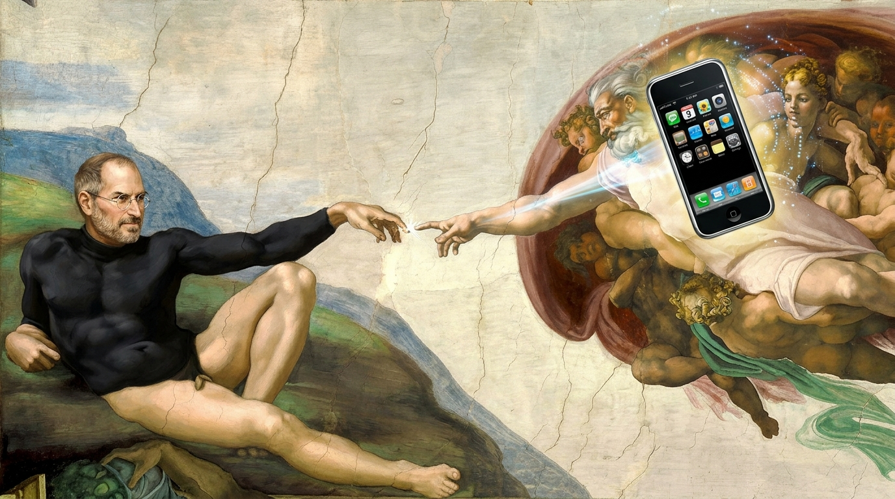
2007年旧金山莫斯康展览中心，乔布斯伸出手指触碰那块3.5英寸电容玻璃屏幕。指尖相碰的瞬间，点燃了全球移动互联网时代的星火燎原。
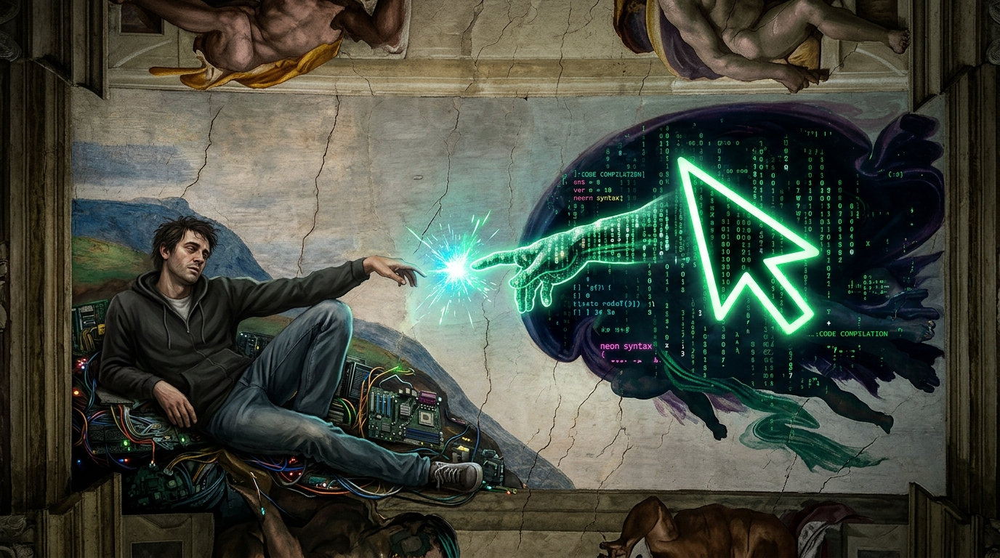
深夜无人的写字楼，主板电缆缠绕的工位上，疲惫的程序员向虚空伸出手。终端里跳动的绿色矩形方块探出一只代码织就的光之手，指尖相触，编译通过。
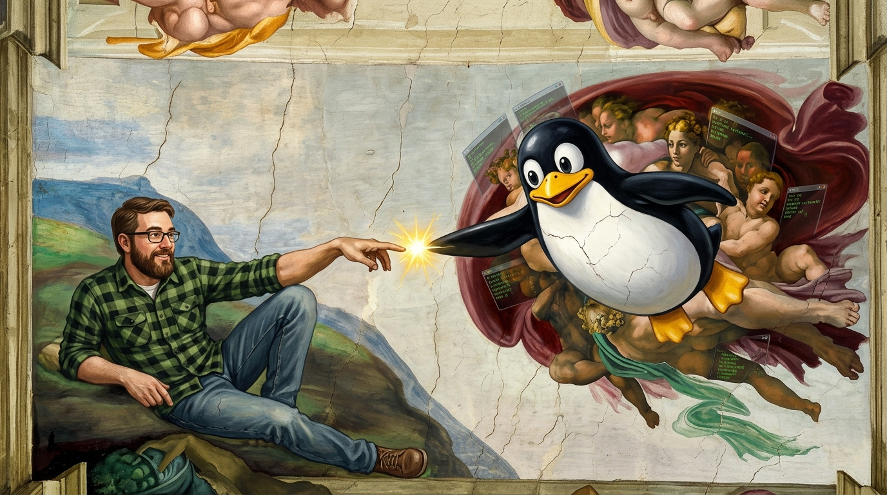
在代码云朵与终端窗口之间，憨态可掬却神圣不可侵犯的 Tux 企鹅探出翅膀。自由与开源的精神在此刻跨越物理限制，赋予全球开发者平等创新的火种。
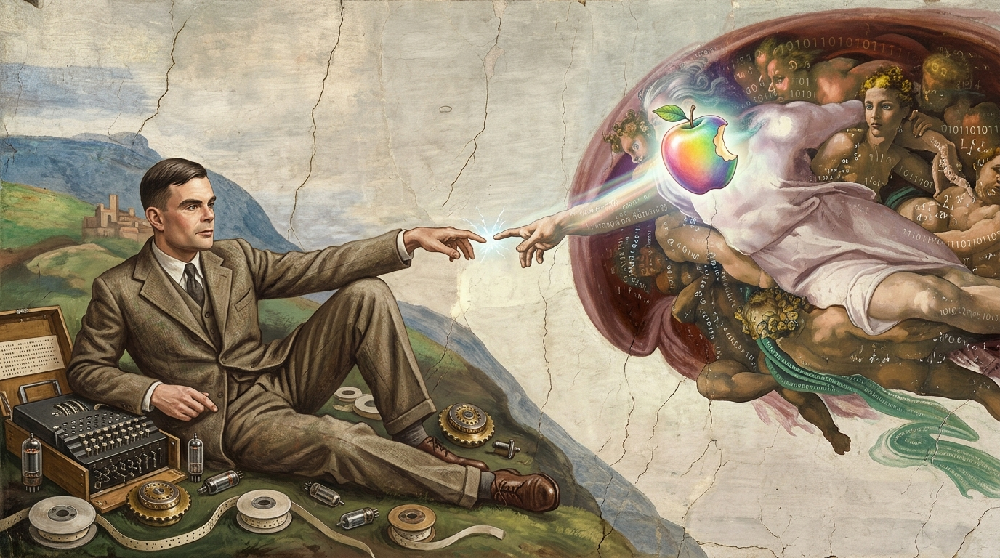
布莱切利园的恩尼格玛转子与真空管旁，图灵伸出手指触向悬浮空中的咬痕苹果。二进制纸带如流云漫卷，这是现代计算科学源头最崇高而隐忍的史诗刻印。
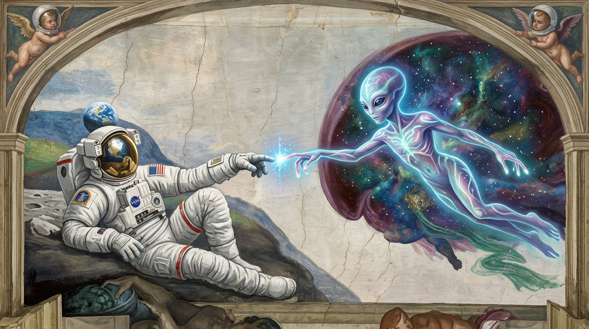
在荒凉寂寥的月壤之上，人类加压手套探向深空，遇见了穿越数亿光年星尘而来的高等荧光智慧。宇宙黑暗森林里最浪漫而纯粹的第一次接触。
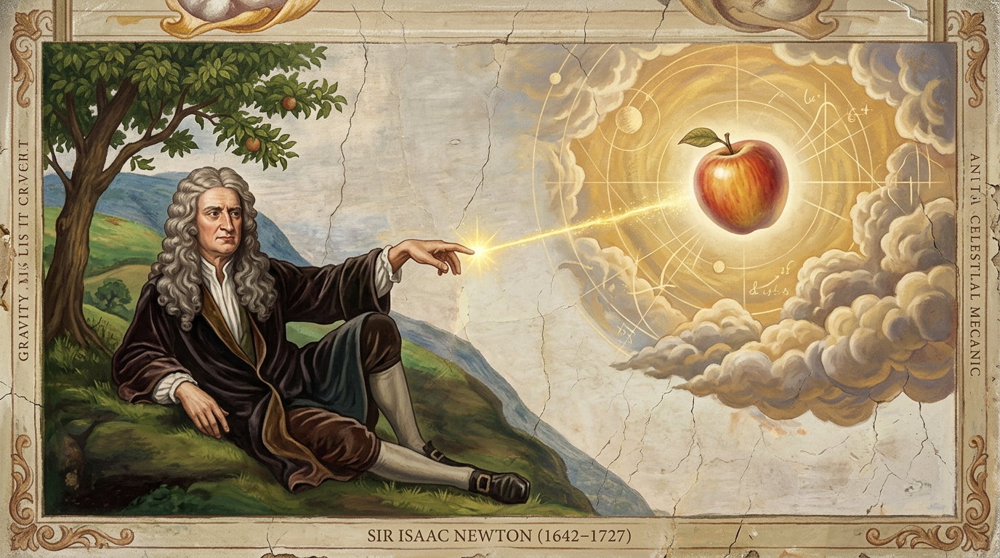
伍尔斯索普庄园的树荫下，一颗苹果抗拒重力悬浮于天幕。牛顿伸出手指，天体几何轨道与微积分曲线在云海中显现，宏观宇宙的秩序被彻底启封。
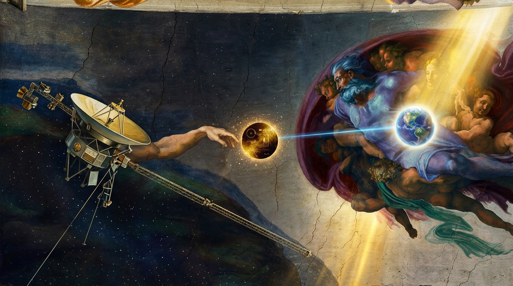
飞出太阳圈的旅行者1号回望，金色唱片在探针与地球之间散发微光。这是人类向无垠宇宙投寄的最孤独漂流瓶，与亿万生灵共居的暗淡蓝点相向互望。
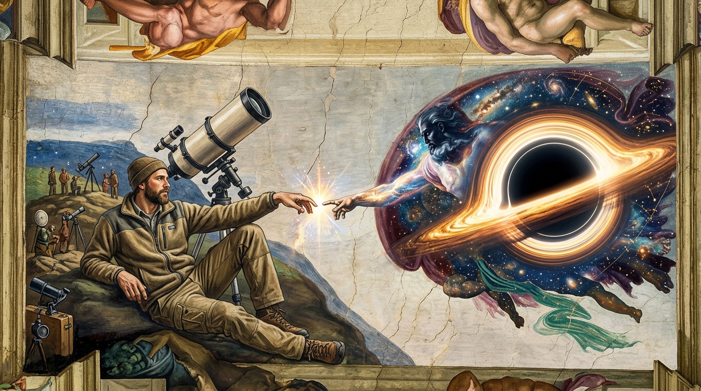
在雪山望远镜旁，渺小的天文学家向深空探出手。炽热旋转的光子环与视界黑洞伸展出引力光带，人类理性的极限与宇宙最极端天体在此交汇。
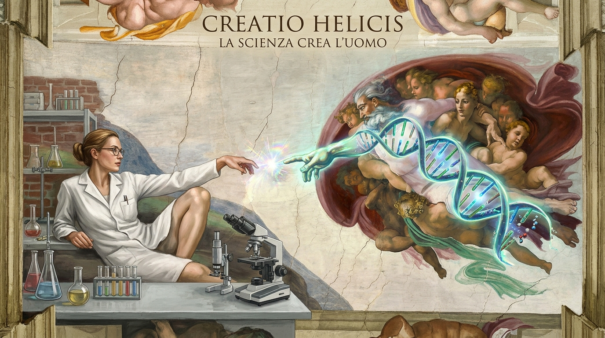
拉丁文刻铭“CREATIO HELICIS”。在显微镜与试管之间，女科学家伸手触碰生命基因密码的金色螺旋。从无机尘埃到有机生命，这一触揭示了自我繁衍的终极奥义。
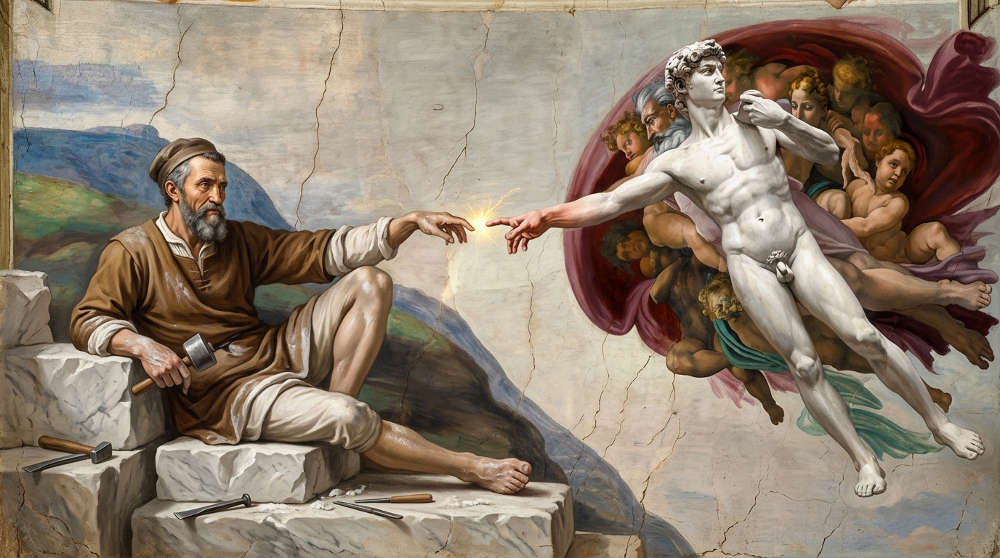
卡拉拉大理石碎屑飞溅，米开朗基罗手握木槌与錾子伸出右手。大卫冷峻的石雕手指在触碰瞬间化作有温度的血肉。创作者与造物的身份在永恒艺术中彻底倒转。
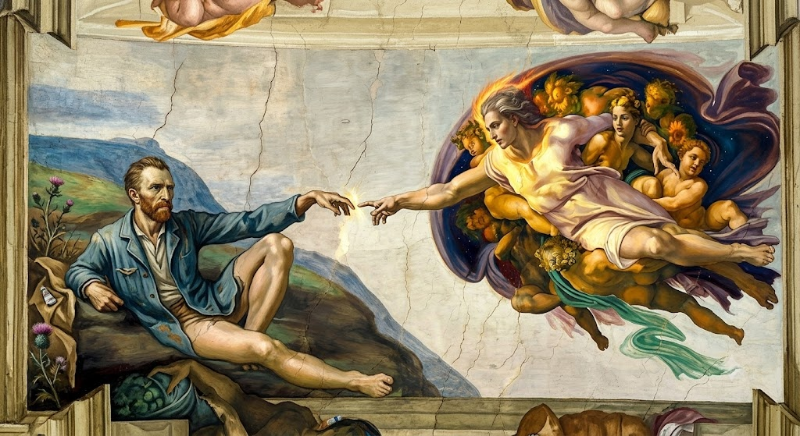
阿尔勒的原野上，身着蓝布工装、耳缠绷带的梵高伸手向天际。一株宛若太阳神化身的金黄向日葵自云海降临，厚重油彩笔触如烈焰般在指间引燃。
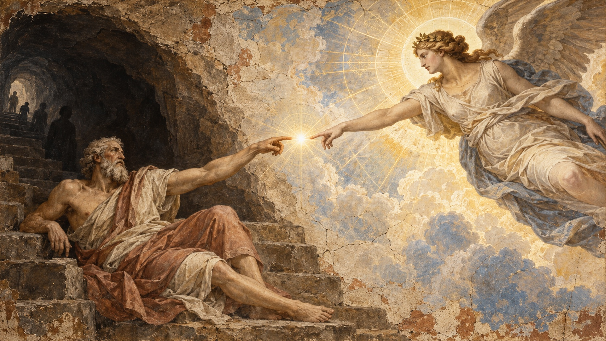
走出柏拉图洞穴阴影的古希腊哲人，踏在冰冷石阶上向天穹伸手。光芒万丈的智慧女神自理念界俯身探出光之手，指尖相触，照亮蒙昧人类对终极真理的渴望。
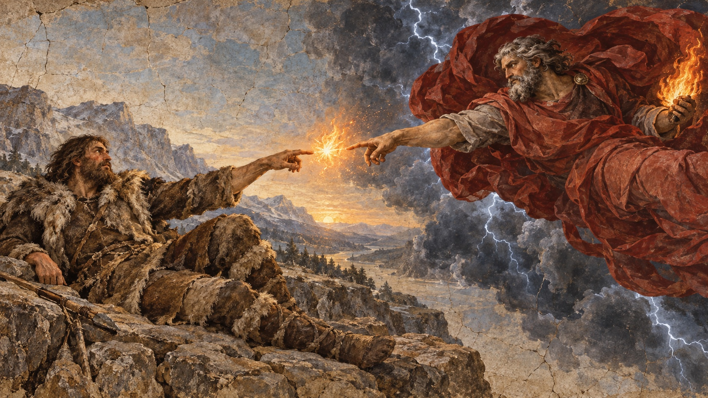
漆黑冰冷的更新世荒原，身披兽皮的原始先民战战兢兢地仰望苍穹。雷霆与天神普罗米修斯降下一缕永不熄灭的炽红火光，文明在指尖接引的瞬间诞生。
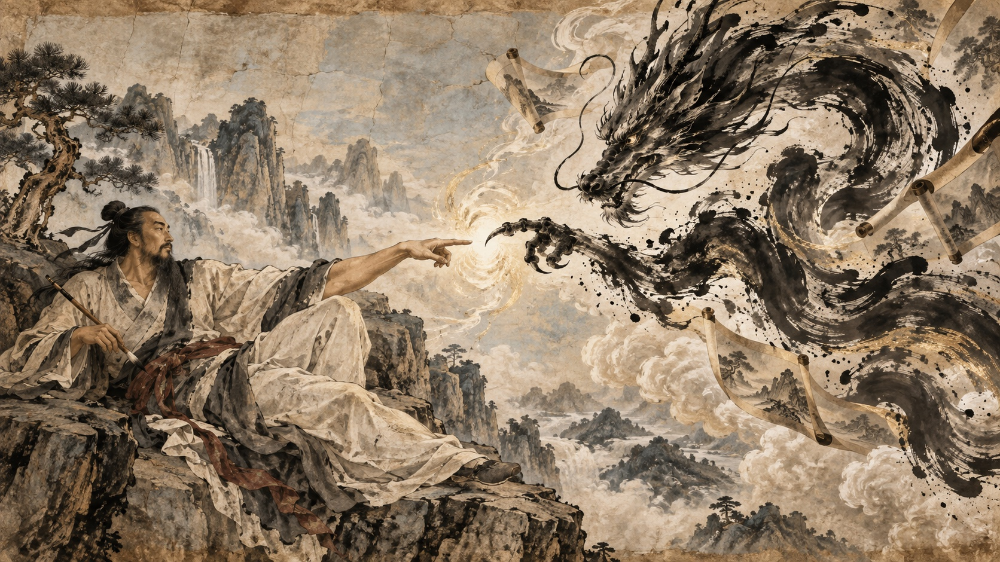
云雾缭绕的高山石案前，东方书法大师提笔悬空。宣纸上的浓淡干湿化作一条凌空翻腾的纯黑水墨巨龙，龙爪与大师指尖相接，气韵生动，天地归心。
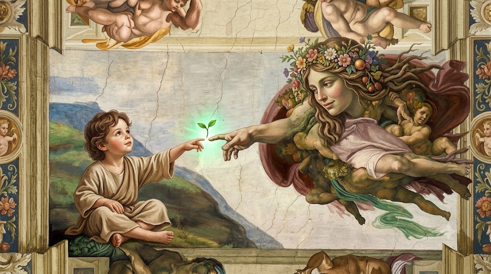
开满雏菊与蒲公英的野花草甸上，人类幼童稚嫩无邪地伸出小手。由盘根错节的老树、翠苔与清冽山泉汇聚而成的大地神灵温柔探出指尖，生命的轮回生生不息。
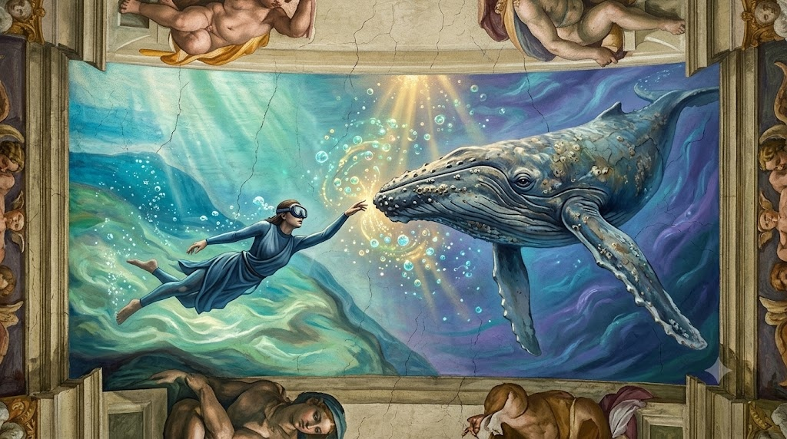
蔚蓝透彻的大洋深处，无气瓶的自由潜水员宛如游鱼般悬浮在光柱下。数十吨重却温和如长者的座头鲸缓缓伸展长鳍，两颗跨越亿万年演化鸿沟的心脏在此共鸣。
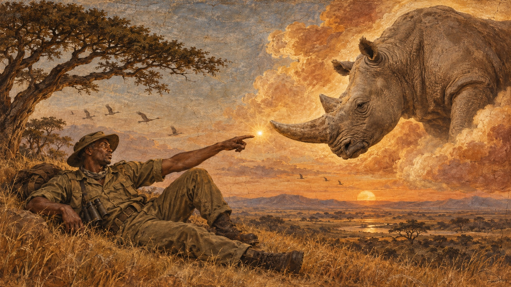
暮色笼罩的东非金黄稀树草原，疲惫却目光深沉的野生动物巡护员坐在金合欢树下。濒危物种的巨兽缓缓俯首，与守护者触碰。守护与被守护，在此刻定格为永恒悲悯。
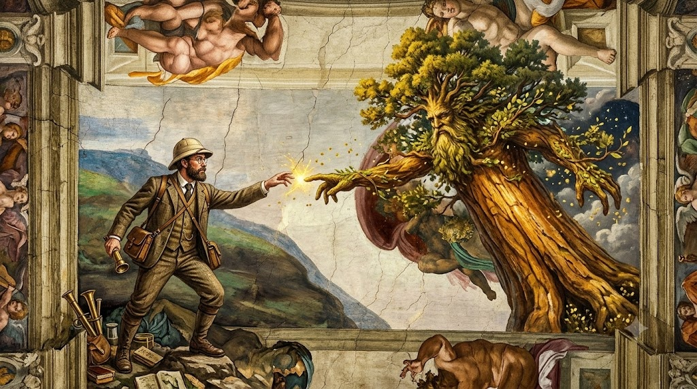
晨雾弥漫的北美原始红杉林中，植物学家手握放大镜仰卧于松针地毯。三千年风霜的红杉树心探出一缕琥珀色的树灵之手，指尖相触，岁月长河的年轮在心底流转。
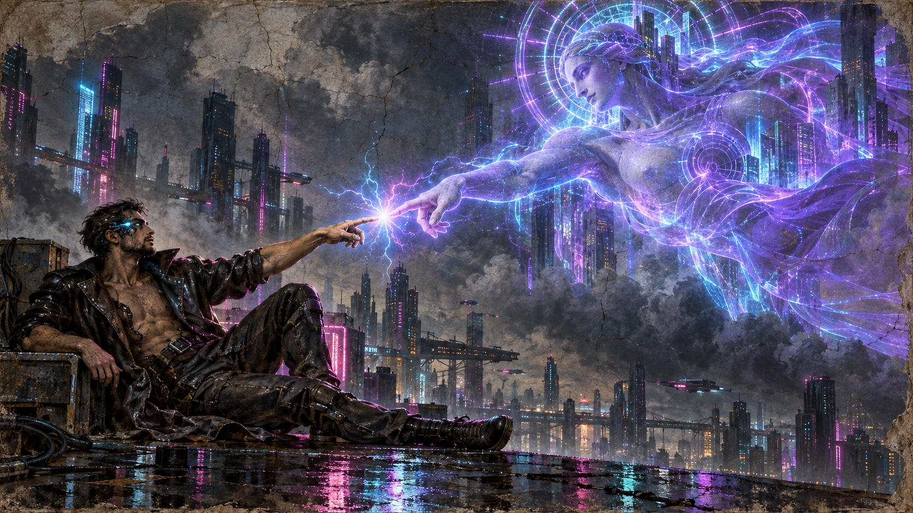
高楼林立、霓虹倒映在水泊中的赛博朋克雨夜，披着风衣的黑客躺在天台冷铁边缘。天际线间浮现出巍峨神圣的数码全息神祇，伸出激光几何编织的光之手，代码升华。
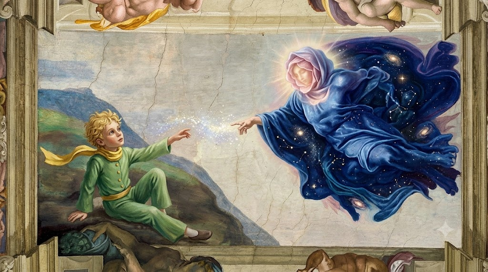
B-612小行星微小的曲面上，金发小王子金黄围巾在深空星河中轻轻飘扬。玻璃罩下的玫瑰探出娇柔花瓣与小王子的指尖相触。正是你为玫瑰花费的时间，才使她如此珍贵。
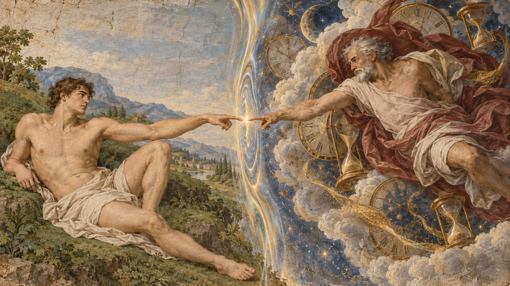
时间的时钟齿轮与金色沙漏如星云旋转，中央一道水波涟漪的透明时空镜面。二十岁的年轻人与八十岁饱经沧桑却目光慈祥的自己手指相对，跨越一生的宽容与对话。
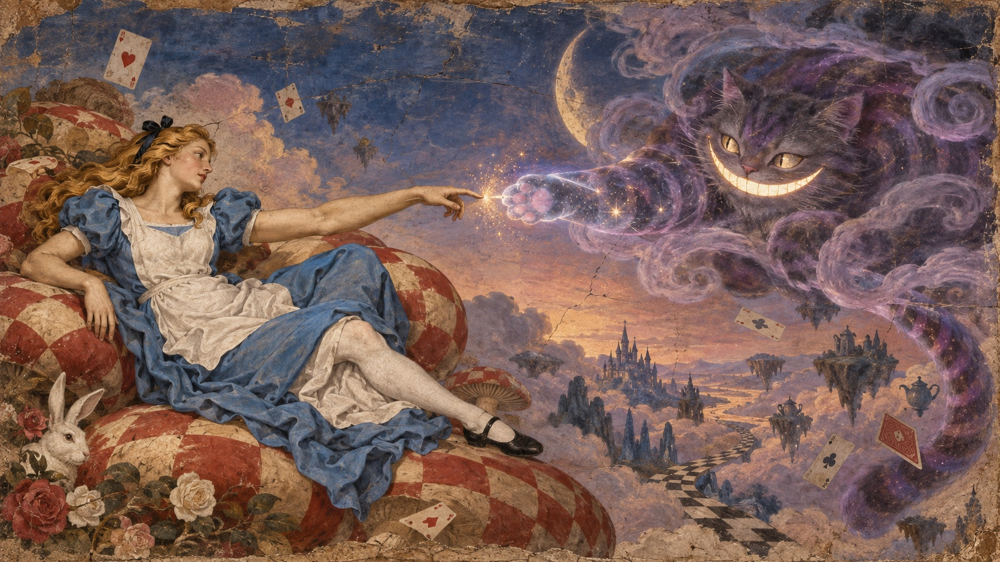
在棋盘菌类与悬浮扑克牌构筑的奇境乐园，金发爱丽丝好奇地伸手。若隐若现、唯余标志性神秘月牙微笑的柴郡猫自虚空中探出半透明的爪子，荒诞与哲思在此碰撞。
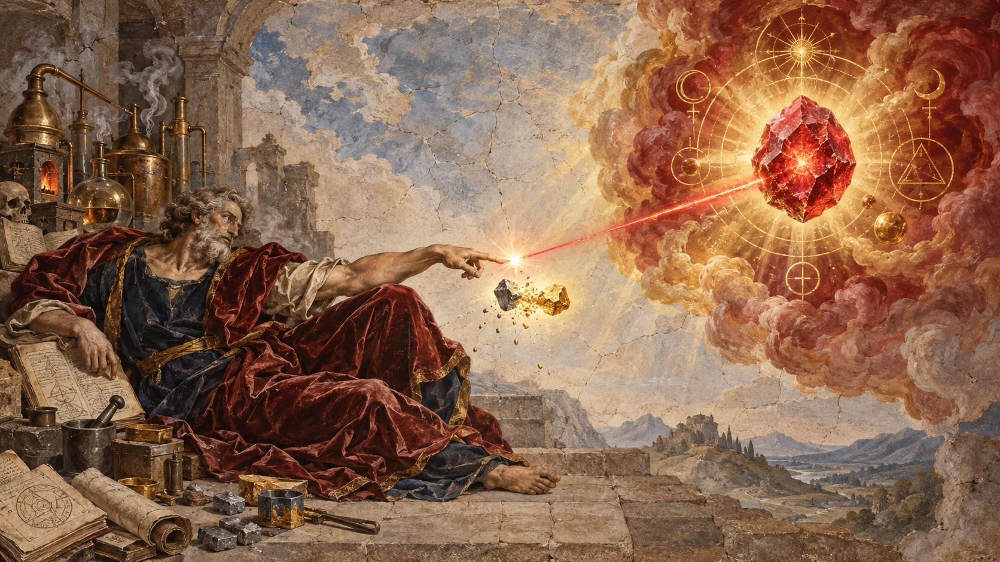
古老中世纪密室充满蒸馏器、星盘与神圣几何羊皮纸。老迈的炼金术士伸出颤抖的手指，点向悬浮空中散发着炽红金光的传奇哲人石，铅石点金的奇迹在此封顶。
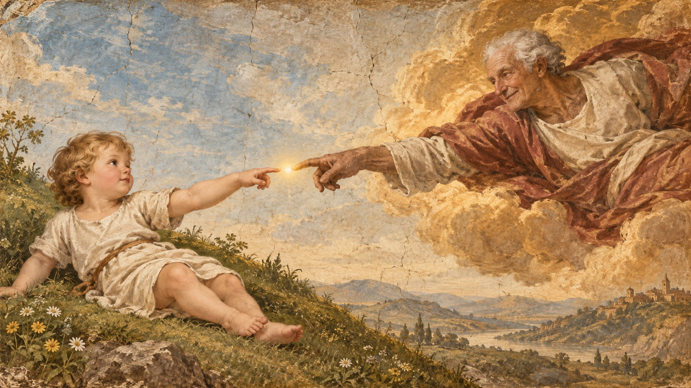
夕阳斜照的老宅门廊前，蹒跚学步的幼童伸出肥嘟嘟的小手。八十五岁祖父布满厚茧、青筋隆起如黄土高坡沟壑的大手伸出相迎。生命的血脉与家族的记忆在指端静默交接。
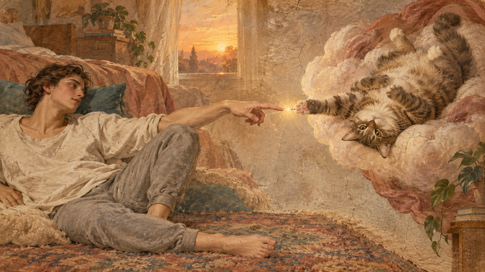
现代城市微凉的黄昏，独居青年脱下工牌躺在客厅地毯上。沙发上伸着懒腰的花猫懒洋洋地伸出一只前爪，软糯粉嫩的肉垫与人类食指轻轻对碰，治愈了一整天的孤寂。
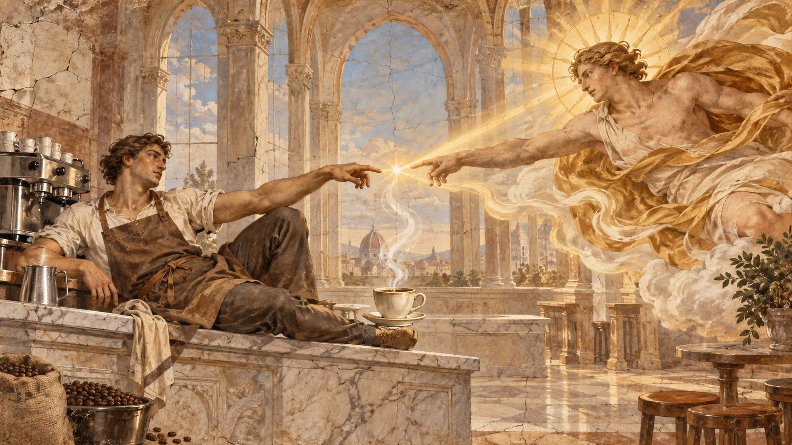
街角咖啡馆的第一声蒸汽嘶鸣，专注的咖啡师倾斜奶缸勾勒天鹅拉花。晨曦如圣光穿透落地窗，一缕纯金色的阳光与咖啡师的指尖在蒸腾热气上方相遇。
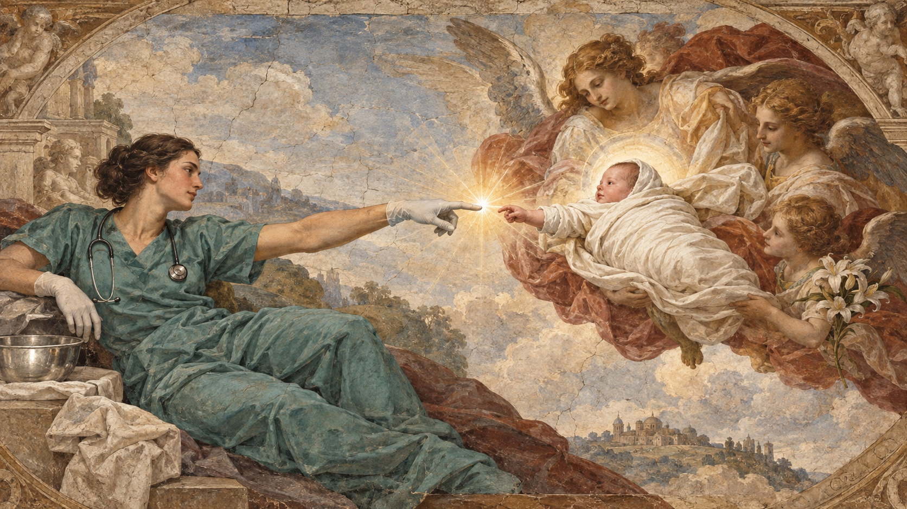
手术室神圣无瑕的光照下，产科医生戴着乳胶无菌手套轻轻探出一指。刚剪断脐带、啼哭声响彻产房的新生儿，本能地用整个稚嫩拳头紧紧握住医生的指腹。
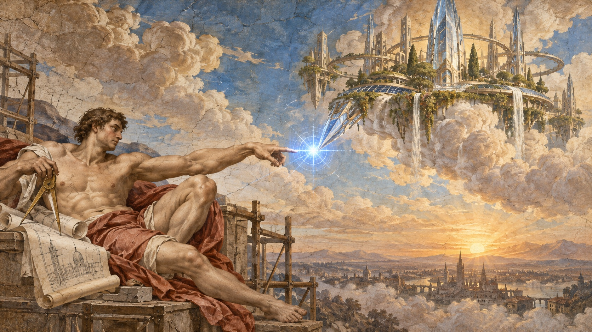
高耸云端的摩天脚手架上，青年建筑师手握图纸仰望长空。天穹云海中，一座由悬浮反重力晶体、垂直空中森林构筑的理想国之城探下尖顶，梦想在指尖化作真实宏图。